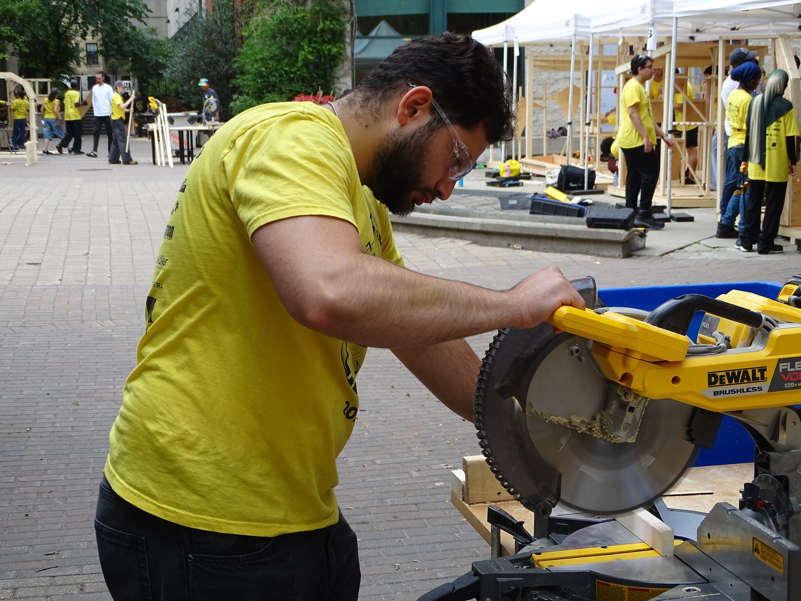
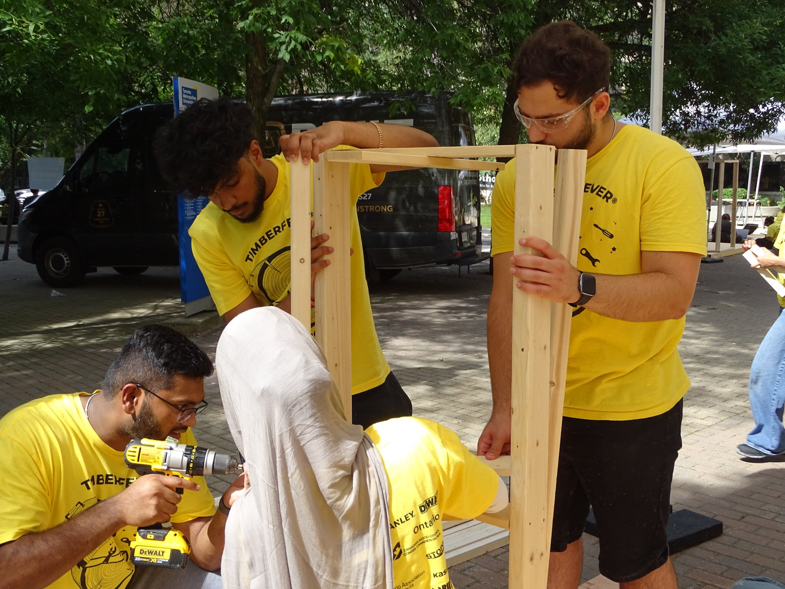
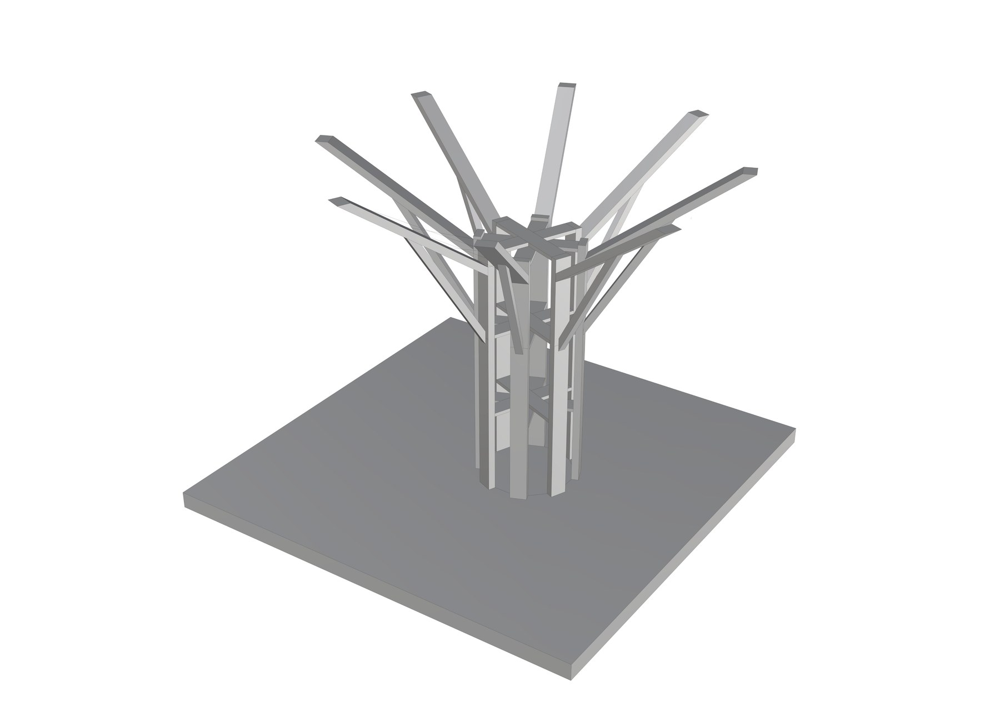
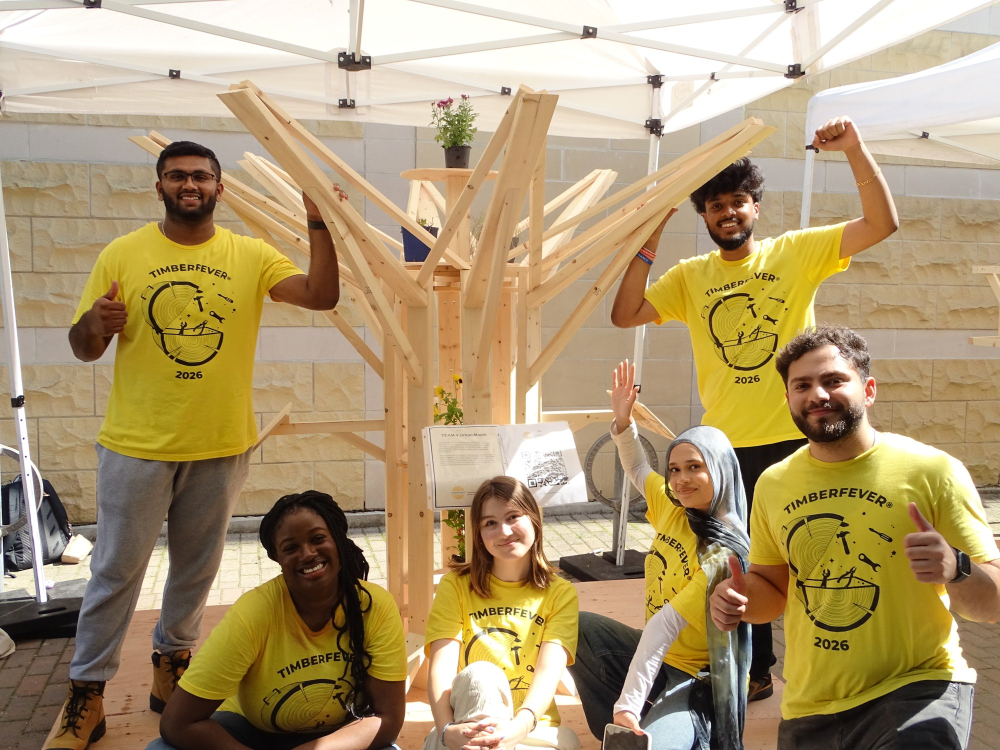

Align the disciplines
Balance the architectural concept with stability, material limits, connection logic, and an achievable build sequence.

TIMBERFEVER 2026 · DESIGN-BUILD COMPETITION
Six students. A fixed timber kit. One shared idea developed from a digital model into a full-scale installation.
THE CHALLENGE
TimberFever is a multidisciplinary competition where 16 teams of six pair architectural imagination with structural judgement.
Our team combined three architecture students and three engineering students. As a structural engineering student, I helped bring an engineering perspective to the conversation: following load paths, looking for stable geometry, considering how members would connect, and keeping the concept practical to assemble from a limited material set.
The final structure grows from a compact vertical core into an expressive branching canopy. Repeated inclined members give the form its visual rhythm while creating opportunities for triangulation and bracing.
DESIGN-BUILD PROCESS
Balance the architectural concept with stability, material limits, connection logic, and an achievable build sequence.
Use a three-dimensional model to resolve the central frame, branching members, clearances, and overall proportion.
Discuss columns, beams, triangulation, and lateral restraint so the expressive form has a coherent structural system.
Translate the model into timber, coordinate as a team, and adjust details as the full-scale assembly takes shape.
MY RESPONSIBILITIES
I took responsibility for translating our shared concept into buildable timber components, then guiding how those components were cut, positioned, and connected during assembly.

I reviewed the member layout through a structural lens—considering stability, load paths, triangulation, and the order in which the frame needed to come together.
I measured and cut the timber components needed for the build, turning the digital geometry into accurate physical pieces ready for installation.
I led the team through the assembly sequence, communicated where and how pieces connected, and helped resolve fit-up decisions as the full-scale structure took shape.


ENGINEERING LENS
The competition design guide focused structural decisions on columns, beams, plywood bracing, member resistance, and connection capacity. It also emphasized a central principle that shaped our discussions: triangulated arrangements can create stable geometry without depending on panel bracing alone.
Stability
Inclined members and repeated triangular relationships help resist sway.
Buildability
A repeated kit of parts makes the branching system easier to sequence and assemble.
Coordination
Structural decisions were developed alongside spatial and visual goals—not after them.
FIXED MATERIAL KIT
Every team worked from the same allocation, making efficient use of each section part of the design challenge.
THE TEAM

LEADERSHIP THROUGH COLLABORATION
TimberFever strengthened my ability to turn structural decisions into clear actions for a multidisciplinary team—from reviewing stability and connections, to fabricating components, to leading the sequence that brought the final structure together.
Back to portfolio